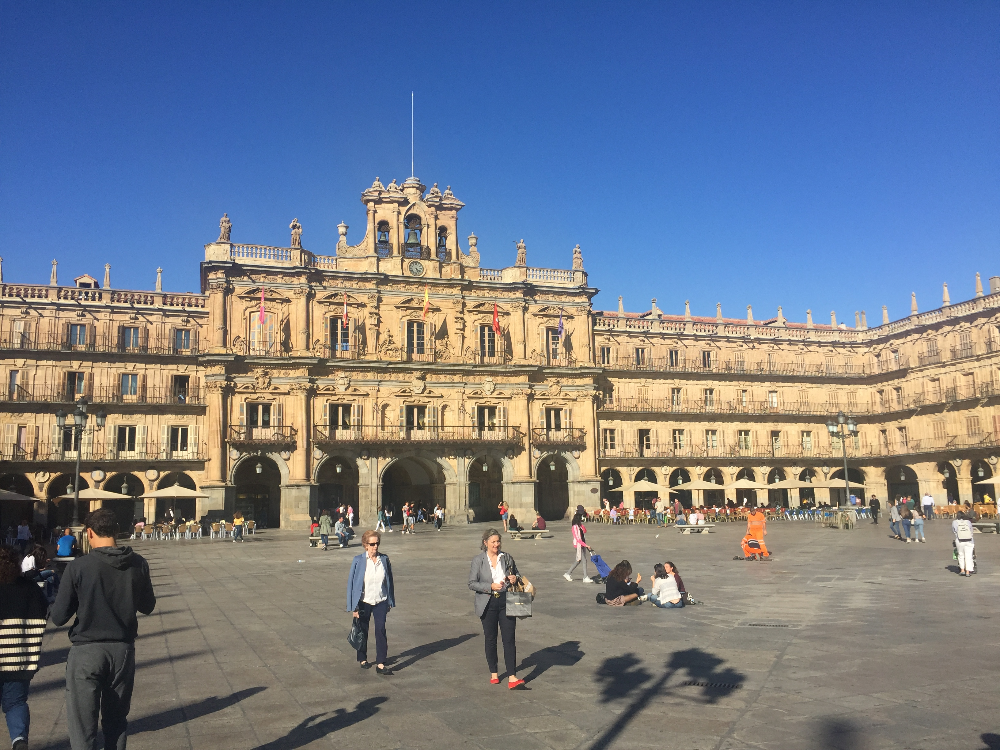
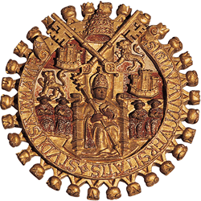
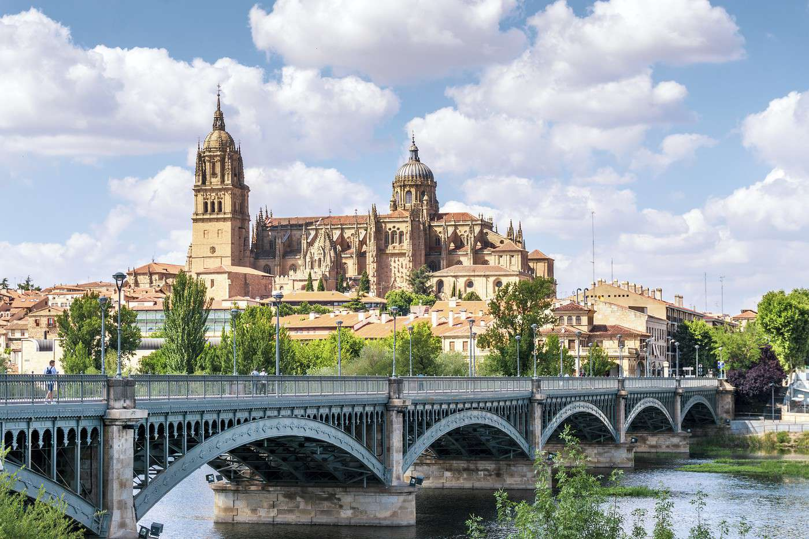
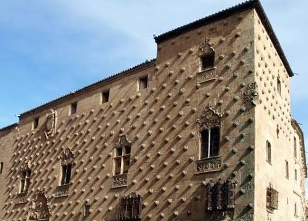
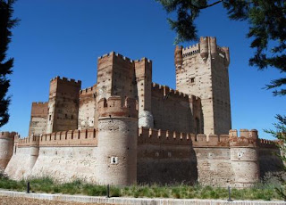
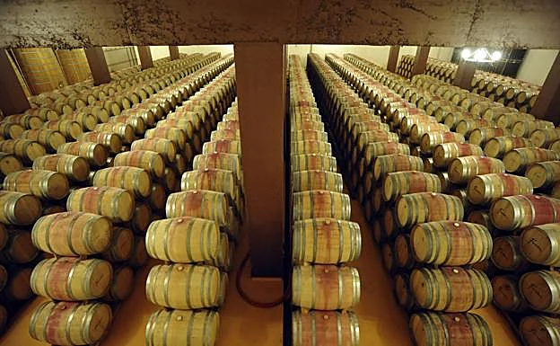
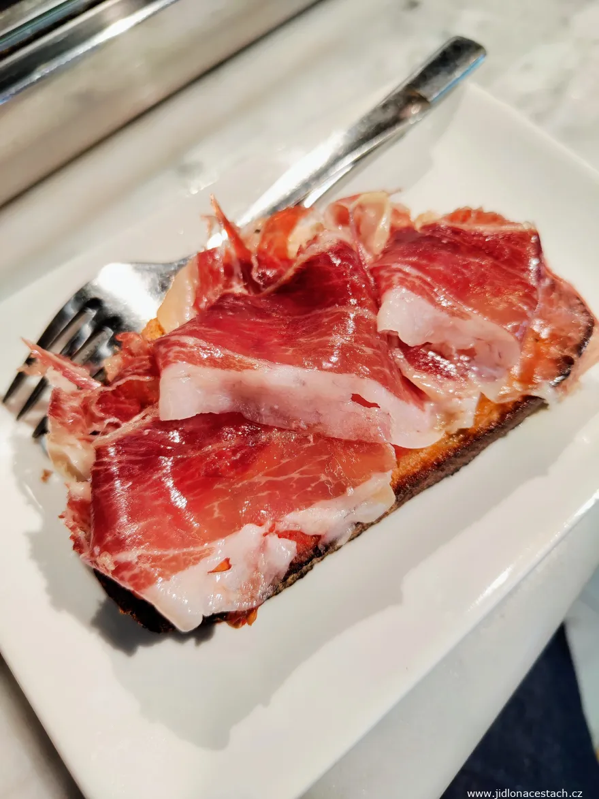
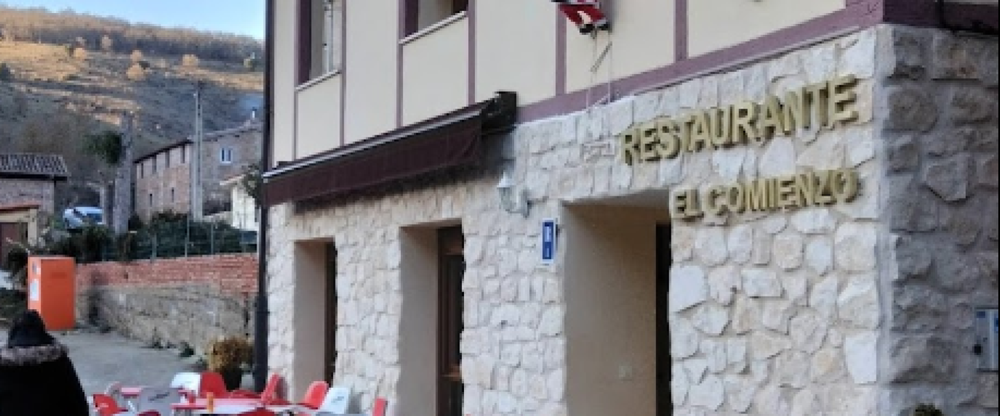

Une escapade au cœur de la Castille dorée
Plongez au cœur d'une ville universitaire unique, où la pierre dorée des monuments se mêle à l'énergie étudiante et aux traditions castillanes. Une escapade de 4 jours pour savourer l'histoire, l'architecture et la gastronomie de cette cité intemporelle, sur les traces d'Isabelle de Castille et des grandes reines qui ont façonné l'Espagne.
Le voyage en un coup d'œil

🏛️ Plaza Mayor
- L'une des plus belles places d'Espagne
- Baroque castillan du XVIIIe siècle
- Pierre dorée de Villamayor
- Cœur vivant de la ville

🎓 Université
- La plus ancienne d'Espagne (1218)
- La grenouille légendaire à dénicher
- Patrimoine UNESCO
- Énergie étudiante unique

⛪ Cathédrale
- Deux édifices majestueux imbriqués
- Cathédrale Vieille (romane)
- Cathédrale Nouvelle (gothique)
- Astronaute caché sur la façade

🐚 Casa de las Conchas
- Façade unique ornée de 300 coquillages
- Ordre de Santiago
- Bibliothèque publique aujourd'hui
- Perle architecturale

👑 Tordesillas
- Traité de 1494 (partage du monde)
- Monastère royal Santa Clara
- Résidence des reines de Castille
- Patrimoine castillan

🏰 Medina del Campo
- Château de la Mota
- Isabelle la Catholique y vécut
- Grandes foires médiévales
- Vins de Rueda à proximité
La pierre dorée de Salamanque
La pierre de Villamayor baigne la ville d'une lumière dorée unique, surtout au coucher du soleil. Une cité classée UNESCO depuis 1988.
Votre itinéraire jour par jour
Jour 1 · En route vers Salamanque
Départ matinal
Route vers la Castille-et-León à travers les vastes paysages castillans, notamment Burgos et ses terres historiques.
Arrêt déjeuner à Palencia
Découverte de cette cité historique au riche patrimoine religieux : cathédrale gothique, ruelles authentiques et ambiance locale pour une première immersion castillane.
Arrivée à Salamanque
Installation à l'hôtel et première balade sur la Plaza Mayor, baignée de la célèbre lumière dorée de la pierre de Villamayor. Soirée libre pour une première immersion dans l'ambiance étudiante.
Jour 2 · Salamanque découverte
Plaza Mayor & rues historiques
La Plaza Mayor, cœur baroque et vivant de la ville, puis flânerie dans les rues historiques pavées. Découverte de la Casa de las Conchas et de sa façade unique ornée de 300 coquillages de l'Ordre de Santiago.
Déjeuner castillan
Déjeuner dans un restaurant typique : hornazo castillan, jamón ibérico et vins de Rueda (verdejo).
Université & Cathédrale
Visite de l'Université (la plus ancienne d'Espagne, fondée en 1218) : cherchez la fameuse grenouille sculptée sur la façade, porte-bonheur des étudiants. Puis découverte des deux cathédrales imbriquées : la Vieille (romane, XIIe) et la Nouvelle (gothique, XVIe). Cherchez l'astronaute caché sur la façade !
Soirée tapas en centre-ville
Les tavernes du centre s'animent de l'énergie étudiante et de l'ambiance conviviale propre à Salamanque. Dégustation de tapas et de vins locaux.
Jour 3 · Route des Reines
Tordesillas
Route vers Tordesillas, résidence historique des reines de Castille. Découverte du Monastère royal Santa Clara, où fut signé en 1494 le célèbre Traité de Tordesillas partageant le monde entre l'Espagne et le Portugal. Une étape majeure de l'histoire espagnole.
Medina del Campo
Déjeuner à Medina del Campo, ville des grandes foires médiévales. Visite du château de la Mota, où vécut Isabelle la Catholique. Panorama sur la Castille depuis la forteresse.
Madrigal de las Altas Torres & Rueda
Madrigal de las Altas Torres, village natal d'Isabelle la Catholique. Puis direction la région viticole de Rueda pour une dégustation de vins locaux : le verdejo, cépage blanc emblématique de l'appellation.
Ambiance étudiante le soir
Retour à Salamanque pour une dernière soirée dans l'ambiance vibrante des tavernes universitaires.
Jour 4 · Retour & dernière pause
Matinée libre à Salamanque
Dernier café sur la Plaza Mayor. Temps libre pour une ultime flânerie, derniers achats ou visite complémentaire selon vos envies.
Déjeuner à Puras de Villafranca
Le trajet du retour s'interrompt pour un déjeuner convivial à Puras de Villafranca (Burgos), belle étape pour clôturer l'escapade dans un cadre castillan authentique.
Route du retour
Route du retour avec les images de la Castille dorée en tête et le goût du hornazo sur les lèvres.
La Route des Reines
Sur les pas d'Isabelle de Castille, de Tordesillas à Medina del Campo. L'histoire des Rois Catholiques, Isabelle et Ferdinand, qui unifièrent l'Espagne.
Gastronomie castillane

🍷 Vins de Rueda
Le verdejo, cépage blanc emblématique de Rueda. Vins frais, aromatiques, parfaits avec la gastronomie castillane.

🍞 Petit-déjeuner salmantin
Pain grillé, tomate, jambon ibérique et café. Le réveil castillan par excellence.

🍽️ Cuisine castillane
Hornazo, jamón ibérico, cochon de lait, agneau rôti. Une gastronomie généreuse et authentique.

🍇 Route des vins
Dégustation dans les bodegas de Rueda. Verdejo et tempranillo, les cépages rois de la région.
L'esprit du voyage
🏛️ Patrimoine UNESCO
Salamanque · Université · Cathédrale · Casa de las Conchas
👑 Histoire royale
Tordesillas · Medina del Campo · Isabelle la Catholique · Rois Catholiques
🍷 Vins de Rueda
Verdejo · Bodegas · Dégustations · Terroir castillan
✨ La philosophie VPDVOYAGES
- Sélection : Des étapes qui ont du sens dans le rythme global
- Équilibre : Culture + histoire + gastronomie + vins
- Personnalisation : Le programme évolue selon vos envies
Salamanque, avec sa pierre dorée, son université millénaire et sa Route des Reines, offre une escapade riche en histoire, en beauté et en saveurs castillanes.
Votre itinéraire sur la carte
De Palencia à Puras de Villafranca, en passant par Salamanque, Tordesillas et Medina del Campo : cliquez sur chaque point doré pour découvrir les étapes de votre escapade.
Bon séjour à Salamanque !
Venez partager cette escapade au cœur de la Castille dorée · 4 jours · Route des Reines
Parlons de votre projet →